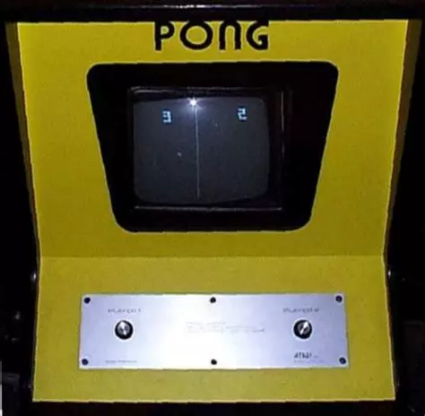
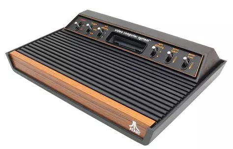
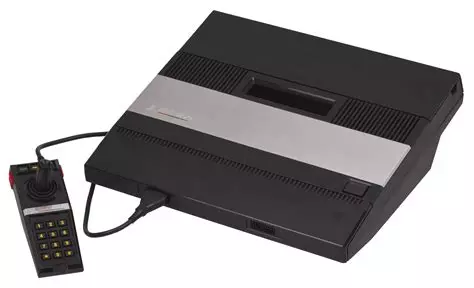
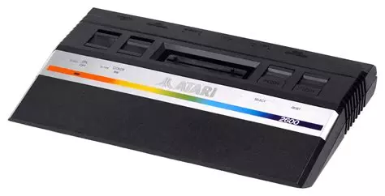
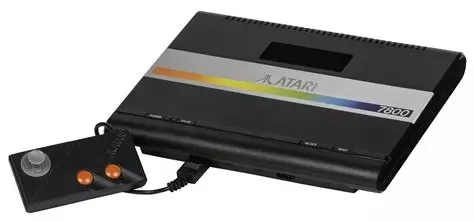
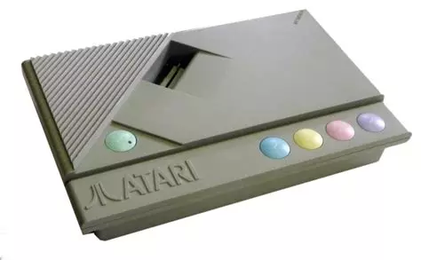
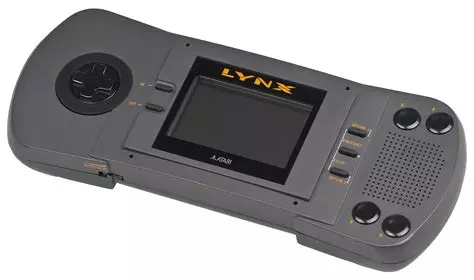
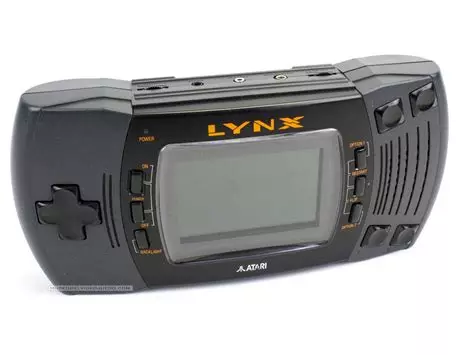
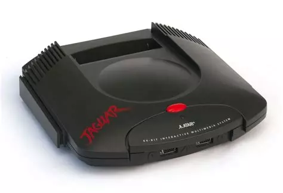

Le système Pong, une version domestique du célèbre jeu d'arcade d'Atari, a été lancé pour les fêtes de fin d'année 1975 malgré les doutes initiaux des distributeurs, qui préféraient promouvoir les consoles de Magnavox. Pourtant, Pong a connu un succès phénoménal, épuisant rapidement les 150 000 unités initiales. Ce jeu de tennis minimaliste, mais captivant, a conquis les joueurs grâce à sa simplicité et à son accessibilité. Bien qu'il ait finalement cédé la place à des jeux plus avancés au début des années 80, Pong demeure un jalon dans l'histoire du jeu vidéo, ayant pavé la voie à une industrie prospère et diversifiée.
La VCS d'Atari marque un tournant dans l'histoire du jeu vidéo en tant que première console à cartouche de la marque. Arborant un design massif avec une finition bois, cette console se distingue par son pupitre imposant. Elle offre un port cartouche pour les jeux, ainsi que six interrupteurs permettant divers réglages. Ces interrupteurs vont de la mise sous tension de la machine à la sélection du type de téléviseur, en passant par le choix des niveaux de difficulté pour chaque joueur et la transition entre les modes de jeu, jusqu'à la réinitialisation du système. Deux modèles seront produits : le "heavy sixer", caractérisé par un blindage RF plus lourd sur les premiers modèles, et les "light sixer", avec un blindage RF plus léger dès 1978. Il est à noter que ces consoles reposent sur un processeur unique, le MOS6507 8 bits cadencé à 1,19 MHz, qui doit assurer l'intégralité des tâches de calcul, d'affichage et de restitution sonore.
Atari prendra une décision ambitieuse en élargissant sa gamme de consoles de salon avec la 5200. Inspirée de l'architecture matérielle de l'ATARI 400, un micro-ordinateur 8 bits lancé en 1979, cette console adoptera une configuration en forme de pupitre, offrant un compartiment de rangement sur le dessus pour les pads, et sera dotée de 4 ports manettes intégrés en standard. Malheureusement, la 5200 ne sera pas compatible avec la vaste ludothèque de la 2600, malgré la continuité de la commercialisation de cette dernière et la sortie régulière de nouveaux jeux. La console reposera sur la base technique mono-processeur de la VCS/2600, mais avec une puce plus sophistiquée (un MOS6502 8 bits cadencé à 1,79 MHz), offrant une puissance accrue par rapport à son prédécesseur. Bien que prometteuse, la 5200 connaîtra un succès limité, ne parvenant pas à dépasser les frontières américaines. Ceci s'explique par le fait que les versions européennes de la VCS/2600 étaient encore relativement récentes sur le marché (seulement 2 ans), et que les consommateurs n'étaient pas encore prêts à effectuer une transition vers un nouveau système.
La dernière itération du système VCS/2600, baptisée modèle Jr (pour Junior), présentera un design radicalement différent de celui d'origine, s'alignant sur celui de la future ATARI 7800. Les interrupteurs classiques de type "switchs" seront remplacés par des poussoirs "à plat" et des boutons de type "push", offrant ainsi une esthétique plus moderne. En termes d'améliorations, la Jr disposera d'un processeur central légèrement amélioré par rapport aux modèles classiques de la VCS/2600, permettant un affichage plus précis des dégradés de couleurs sur les arrière-plans des jeux. La 2600 Jr marquera la conclusion d'une saga commerciale s'étendant sur 8 années pour les modèles de la gamme, avec un succès mondial dépassant les 30 millions d'exemplaires vendus (toutes versions de la VCS/2600 confondues), positionnant ATARI en tant que leader du secteur. À son apogée, la société détiendra des parts de marché atteignant les 80 %.
*Alors que la NES/Famicom de Nintendo et la MasterSystem/MarkIII de Sega dominent déjà le marché des consoles de troisième génération, Atari lance son propre modèle, le 7800, pour conquérir sa part de marché dans le domaine du jeu vidéo nouvelle génération. Inspirée du design de la 2600 Jr, la 7800 propose une rétrocompatibilité totale avec les jeux des systèmes VCS/2600, sans nécessiter d'adaptateur comme c'était le cas pour la 5200. Il est intéressant de noter que ce nouvel hardware n'est pas développé en interne par Atari, mais par General Computer Corporation, une entreprise historiquement associée à Atari, produisant notamment des kits de conversion pour les bornes d'arcade du constructeur ainsi que de nombreux jeux pour ses différentes plateformes. Le processeur central reste identique à celui utilisé sur la 5200 (un MOS6502 8 bits cadencé à 1,79 MHz), mais pour la première fois dans un modèle estampillé Atari, un processeur graphique est intégré, permettant de produire des graphismes potentiellement concurrentiels avec ceux des consoles concurrentes de Nintendo et Sega. Cependant, malgré la possibilité pour la console de générer un signal RGB via une péritel, les couleurs semblent pâles et l'affichage global est considérablement en deçà de celui de la concurrence.
La XEGS se présente comme une sorte de console hybride, étant donné qu'elle repose sur l'architecture matérielle du micro-ordinateur Atari 65XE, issu de la gamme 8 bits de la marque. Elle bénéficie ainsi de la totalité du catalogue logiciel de cet ordinateur, comprenant à la fois des jeux et des applications. De plus, un clavier en option permet de transformer la XEGS en un véritable 65XE.
Initialement prévue pour être lancée en 1987 sous le nom de "Handy" et sous la marque Epyx, le projet a été acquis par Atari et légèrement modifié avant de finalement sortir juste avant 1990. Du point de vue technique, la console est équipée d'un processeur central MOS65C02 8 bits cadencé à 3,6 MHz, associé à un processeur graphique 16 bits capable d'afficher 16 couleurs parmi 4096. La Lynx, comme elle a été finalement nommée, a été la première console portable à disposer d'un écran LCD couleur, offrant des options ergonomiques dédiées aux gauchers grâce à la possibilité de retourner l'écran à 180 degrés, permettant ainsi à ces joueurs de profiter pleinement de l'expérience de jeu. Le multijoueur était également au cœur du gameplay, avec la possibilité de connecter jusqu'à 8 joueurs simultanément via un câble dédié. Malgré des spécifications techniques indéniablement supérieures à celles des concurrentes qui ont émergé dans les années suivantes (Game Gear et GameBoy), la console portable d'Atari n'a pas réussi à trouver son public, en raison d'une autonomie faible et énergivore, ainsi que d'un catalogue de jeux trop limité.
La seconde itération de la Lynx offrait une prise en main améliorée grâce à l'ajout de grips au niveau de la position de la paume des mains. L'écran a été amélioré et l'autonomie de la console, qui était un véritable point faible de la première version, a été augmentée, notamment grâce à l'introduction d'un mode veille permettant de préserver les ressources énergétiques de la machine. La console a adopté une forme plus moderne avec des dimensions sensiblement réduites, ainsi qu'une croix de direction élargie et des boutons plus confortables.Cependant, tout comme sa première itération, la Lynx II n'a pas réussi à s'imposer sur le marché des consoles portables. Elle marquera la fin de l'expérience d'Atari dans ce segment du marché du jeu vidéo, avec un chiffre de ventes d'environ 6 millions d'unités écoulées entre 1989 et 1995 (tous modèles confondus). Ce score la place une fois de plus derrière les leaders du secteur, à savoir Nintendo avec ses 119 millions de GameBoy et Sega avec ses 10,6 millions de GameGear, mais elle se positionne tout de même devant le tandem NEC/Hudson avec ses 1,5 million de PCEngineGT.
La Jaguar émerge d'un projet avorté appelé la Panther, présentant une architecture matérielle complexe avec un processeur central 16 bits, un processeur graphique 32 bits et un processeur d'objets/blitter 64 bits. Malgré son design novateur à l'époque où les consoles 16 bits comme la Super Nintendo et la Megadrive dominaient le marché, la Jaguar s'avère être une fusion technologique peu cohérente. Elle offre des fonctionnalités telles que le jeu en réseau via le JagLink et un contrôleur surdimensionné avec un mini-clavier numérique capable d'accueillir des overlays pour illustrer les fonctions des boutons pour chaque jeu. Plus tard dans sa vie, Atari tente de rester compétitif en ajoutant un lecteur CD (le JagCD) pour rivaliser avec les émergentes Playstation et Saturn de Sony et Sega. Cependant, malgré les efforts, la Jaguar peine à dépasser les 250 000 unités vendues dans le monde entier. Ce faible succès s'explique par plusieurs facteurs, notamment une sortie prématurée sur un marché en rapide évolution et l'incapacité de la Jaguar à rivaliser avec les futures consoles offrant des graphismes 3D texturés. Les éditeurs tiers abandonnent rapidement le support de la Jaguar, et même ceux qui persistent ne parviennent pas à exploiter pleinement sa puissance. Cependant, certains jeux de qualité démontrent le potentiel de la Jaguar s'ils étaient correctement exploités.
